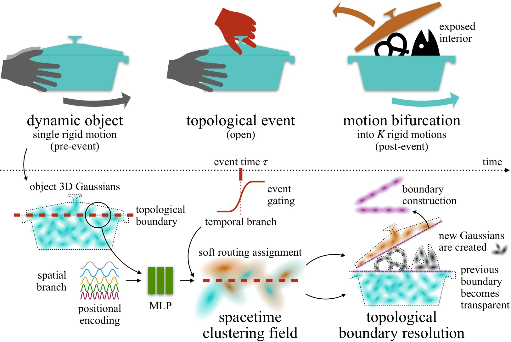
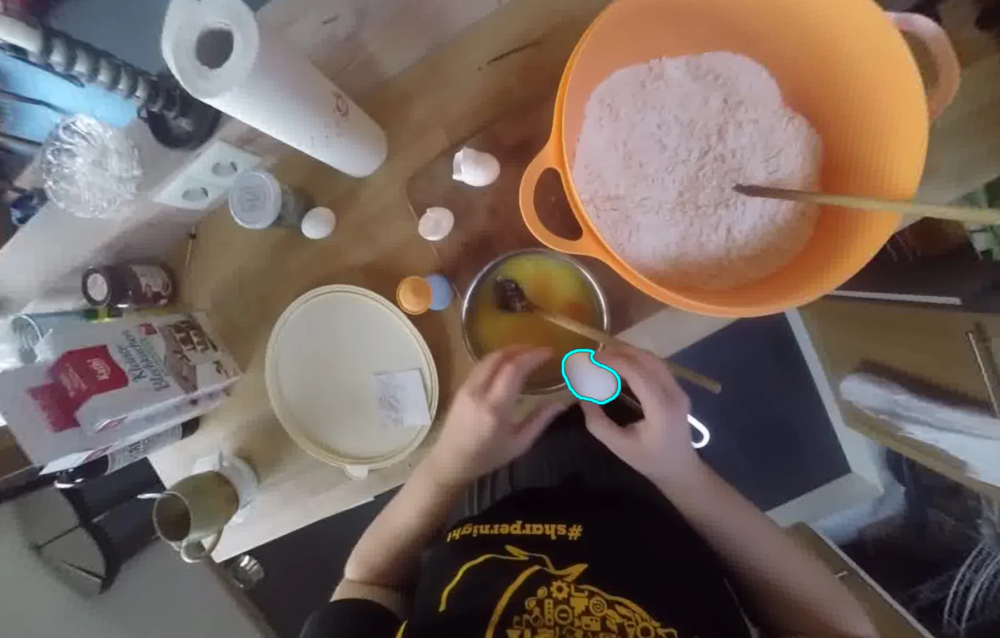
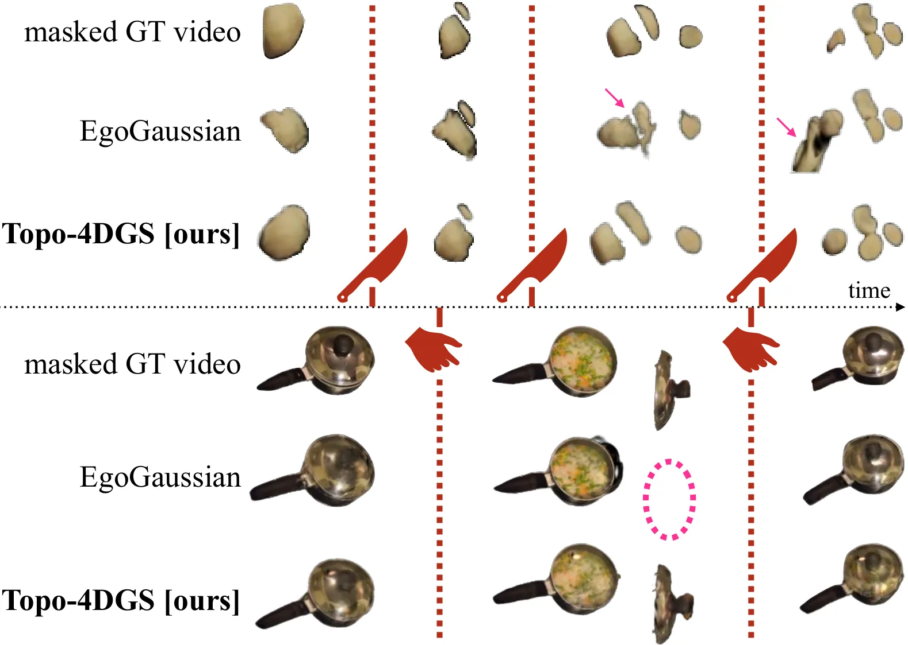
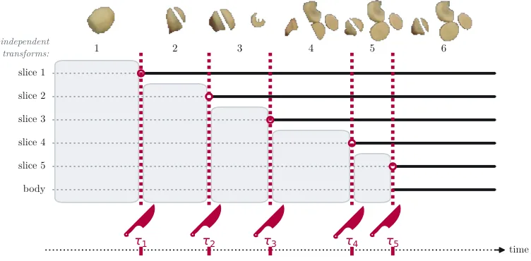
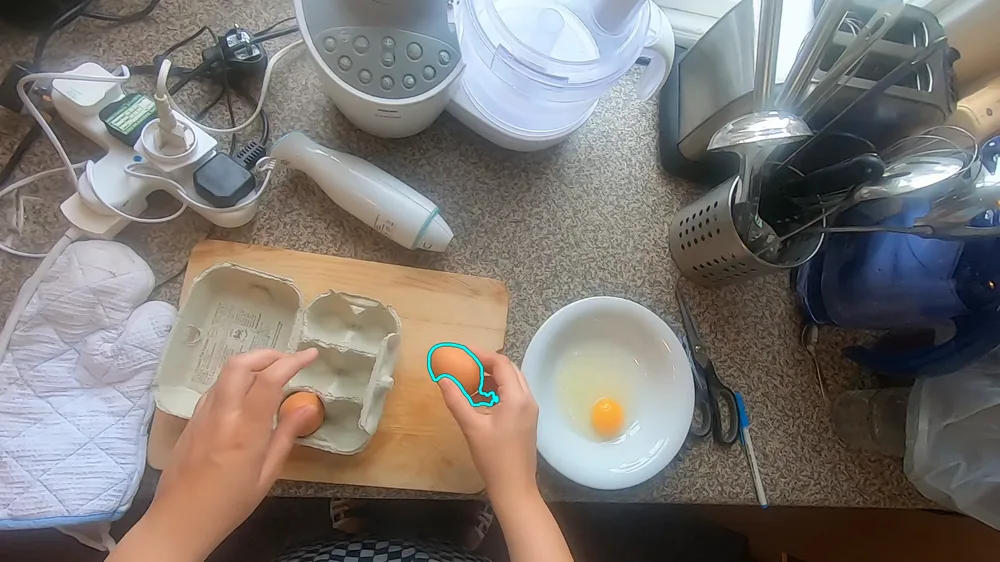

Topo-4DGS：面向第一人称视频的拓扑感知 4D 高斯泼溅
Topology-Aware 4D Gaussian Splatting for Egocentric Videos
这篇把“拓扑变化”从视觉伪影提升为一个可评测的问题，并给出方法：事件树 + 运动分叉（每个末端部件一条 SE(3) 轨迹）+ 时空聚类场（空间 logits 与事件门控偏置做软路由）+ 拓扑边界重建（按接触面凸包补新高斯、按事件时刻设激活/停用窗）。基准 TopoEgo 有 24 段、4,618 帧、36 个物体、34 个事件。事件后帧上比最强基线高 4.47 dB，这个数字比整段平均更能说明它到底解决了什么。
Post-event PSNR gain
Post-event PSNR
TopoEgo benchmark scale
作者、单位与技术谱系 · Research context
作者与单位
研究脉络
- EgoGaussian方法基座关系：单物体位姿估计与“物体单独重建”的骨架直接沿用，并作为最强基线；控制组也取自它的原始基准片段。[论文 §5.3、§6]
- TED-4DGS上游机制关系：可微激活窗的参数化（start/fade 边界与过渡宽度）来自 TED-4DGS，本篇改为用拓扑事件初始化这些边界。[论文 §5.2]
- 本篇推进：TopoEgo 基准 + 运动分叉 + 边界重建本篇推进关系：把“拓扑变化”从零散现象变成有标注的基准，并给出部件级刚体分叉与表面开关的完整表示。[论文 §3、§5、§6.2]
合作网络
- Bocconi ↔ TUM ↔ GoogleBocconi University → Technical University of Munich / Google关系：共同署名[论文首页作者单位]
- Topo-4DGS ↔ EgoGaussian / TED-4DGSTopo-4DGS → EgoGaussian [29]、TED-4DGS [10]关系：技术依赖[论文 §5.2、§5.3]
单位信息取自论文首页；技术依赖取自正文的显式“following/apply”表述，未推断导师或实验室隶属关系。
方法本质拆解 · What actually changed
是不是微调？
不是微调，也不是端到端预训练大模型：每个序列独立优化标准空间高斯、K 条部件轨迹与时空聚类场，损失是 L1 + D-SSIM 加轮廓项与空间正则。EgoGaussian 提供单物体位姿估计的初始化与骨架，TED-4DGS 提供激活窗参数化，两者都不带可训练权重过来。手部像素在损失中被掩掉，掩码来自 SAM 3，属于外部输入而非学习模块。
有没有额外约束？
额外先验不少且都是显式的：事件树给出末端部件数 K 与事件时刻 τ_m，事件门 β 固定 0.25 决定过渡宽度；激活/停用边界由事件时刻初始化并约束 a_f≥a_s；空间分支用低频位置编码保证空间连贯、用 K-means 打破置换对称；另有空间正则 L_sp 让相邻标准位置的路由分布接近，抑制碎片化分配。此外相机内外参、物体/手部掩码都是给定输入。
推理/后端到底做了什么？
推理是标准 3DGS 光栅化：每个高斯的位置由 K 条候选刚体运动按路由权重加权得到，协方差同样加权旋转因子，不透明度乘以激活窗；没有额外的网络前向，也没有每帧的全局 BA。真正“后端”的部分是训练期的联合优化与最后一遍联合场景精修（固定中心、位姿、路由与事件树，只更新外观与激活边界）。
方法本质是什么？
本质是把拓扑事件翻译成“运动自由度 + 表面存活的开关”：事件前所有部件共享一条刚体运动，事件后被路由到各自的刚体分支，同时新表面被造出来并在事件时刻点亮。它没有做的是自动发现拓扑（依赖给定事件树），也没有处理强形变或非刚体材质，所以它是一个结构化先验很强、适用范围明确的表示。
输入单目第一人称视频 + 相机/掩码/事件规格，改变的是高斯的运动自由度与存在时间，动作是按时空聚类场做部件路由并用事件时刻初始化激活窗，直接效果是事件后帧 PSNR 提升 4.47 dB。

结论与问题Conclusion & Motivation
核心结论
Topo-4DGS 的结论是：拓扑变化必须被显式建模成“运动分支 + 表面支撑的时间开关”，光靠更 flexible 的形变场补不回来。它在 TopoEgo 的 8 个数据集×事件族组合上全部第一，事件后帧上 PSNR 24.30 比最强基线 Def-3DGS（去手）19.83 高 4.47 dB，而整段平均只高 0.92 dB——说明收益集中在“事件发生之后”这段真正难的部分。控制组（6 段无拓扑变化的片段）上它也最好（27.92 dB），并未引入质量折衷。
动机与问题
现有 4DGS 依赖标准空间形变，隐含假设拓扑固定；切一刀、开一扇门都会让同一组高斯既要解释切开前的连通表面、又要解释切开后的两个独立部件，只能产生拉伸、粘连或空洞。第一人称视频把这个难点放大：手部遮挡、视角有限、事件瞬间只有几帧证据。作者把问题定义为：如何在事件时刻把单一刚体运动分叉成多部件运动，并让新暴露/被遮住的表面在正确时间出现或消失。
方法Method
方法总览
流程是：给定单目视频、标定相机、物体与手部掩码、事件规格，先对每个物体跑 EgoGaussian 的单物体位姿估计得到粗轨迹，再联合优化标准空间高斯、部件轨迹与时空聚类场。运动分叉把物体末端部件（事件树的叶子）各自绑一条 SE(3) 轨迹 T_k(t)，每个高斯的形变中心是这些候选运动的加权和。拓扑边界重建负责“造面”和“开关”：在分离事件的两个部件接触区做互相最近邻匹配、拟合平面、把点投影后填 2D 凸包生成新高斯，并给每个高斯一个可微的激活窗 W_i(t)。
关键技术细节
软路由由两部分组成：空间分支是一个 MLP h_φ 作用在低频位置编码上，输出与时间无关的 K 维 logits（用短暂的 K-means 打破置换对称）；时间分支是事件门 g_m(t)=σ((t̄−τ̄_m)/β)，β 固定 0.25。两者合成 P_i,k(t)=Softmax((z_i^sp + B g(t̄))/λ)，B 为零初始化的可学习事件偏置矩阵，因此事件之间路由保持稳定。激活窗沿用 TED-4DGS 的 start/fade 参数化，但边界由事件时刻初始化：新表面在事件时刻激活、失效表面在该时刻开始淡出，最后允许小的时序修正，约束 a_f≥a_s。融合/关闭事件通过反转时间轴统一处理成“分离”。

实验Experiments
实验设置
基准 TopoEgo 从 EPIC-KITCHENS 与 Ego4D 筛选，24 段、4,618 帧、36 个动态物体实例、34 个拓扑事件，覆盖 fission/fusion/open/close 四族，帧率为原生帧率、分辨率取四分之一，训练/评测按 1:1 交替帧，与 EgoGaussian 协议一致。指标为整帧与物体区域的 PSNR/SSIM/LPIPS（手部像素在计算时置零），并额外报告事件后帧与“其他动态物体”区域。对照含 EgoGaussian、DeGauss、Def-3DGS、4DGS（各自给出使用/不使用手部掩码的版本）以及 HyperNeRF；消融用 8 段子集。
实验数字与比较
按事件族的物体区域 PSNR（EPIC-KITCHENS / Ego4D）：fission 23.84/25.33、fusion 27.33/23.82、open 20.31/20.80、close 24.48/22.23，八组全部第一，最大领先 1.26 dB；最强基线是去手的 Def-3DGS（fission 22.70、fusion 26.70）。聚合口径：拓扑物体 23.52 vs Def-3DGS 22.60（+0.92 dB），事件后帧 24.30 vs 19.83（+4.47 dB），整场景 27.95 vs 27.80，其他动态物体 25.90 vs 24.69。在 4 段短序列上与 HyperNeRF 相比，整场景 PSNR 31.86 vs 21.11。
消融/失败边界
组件累加（Table 3，8 段子集）：从“单刚体基线”18.45 dB（事件后）开始，加多物体到 19.07，加运动分叉到 23.05（+3.98 dB），加逐部件边界构建到 23.27，加事件条件激活到 26.77（再 +3.50 dB）；也就是说运动分叉与激活窗是两处主要收益，边界构建因为接触面在图像中占比小而增益有限。设计替换（Table 4）：把事件门控时间项换成普通 MLP（UT-MLP）事件后 PSNR 掉到 19.41（>7 dB），把空间分支冻结成初始 K-means 掉到 19.59，去掉时序修正 18.26、去掉联合场景精修 18.57、去掉空间正则 20.80——说明任意帧间路由变化会引入伪运动。
局限与迁移Limitations & Transfer
局限与待核验
作者在结论与附录 K 中承认：方法假设可靠的拓扑事件规格与“近似分段刚体”的部件，强形变交互（揉面、拉伸弹性体）不适用；单目第一人称证据有限，小部件、长时间手部遮挡、只短暂出现的新表面会让几何与运动歧义；透明/高光材质会降低光度重建可靠性；相机内参/轨迹、物体与手部掩码、事件标注都依赖外部输入，自动拓扑发现目前只是预处理模块而非端到端组件。我们的待核验项：附录给的运行时与显存数据未在正文汇总，跨方法的时间成本对比“待核验”；TopoEgo 的 24 段规模较小，换到更长事件链（多次连续切割）后的误差累积未量化；事件时刻标注误差的敏感性只在附录做了有限扫描。
与你研究路线的关系
可迁移的第一个模块是“事件门控的软路由”：用与时间无关的空间 logits 加少量事件偏置，既保证事件之间分配稳定，又能在事件时刻切换运动分支，这比逐帧回归运动更符合“状态机 + 几何”的思路，适合我们做可切换拓扑的部件级地图。第二个模块是“按事件时刻初始化激活窗”，把新表面/失效表面的时间先验直接写进可微参数，再用图像证据微调，这对动态 SLAM 里临时几何的进出场管理是现成模板。下一步实验：在我们自己的多物体动态序列上复现运动分叉，只替换事件来源（人工标注 vs 自动检测），量化“事件时刻误差 ±Δ 帧”对事件后 PSNR 的影响，判断这套方法对标注质量的依赖有多强。







